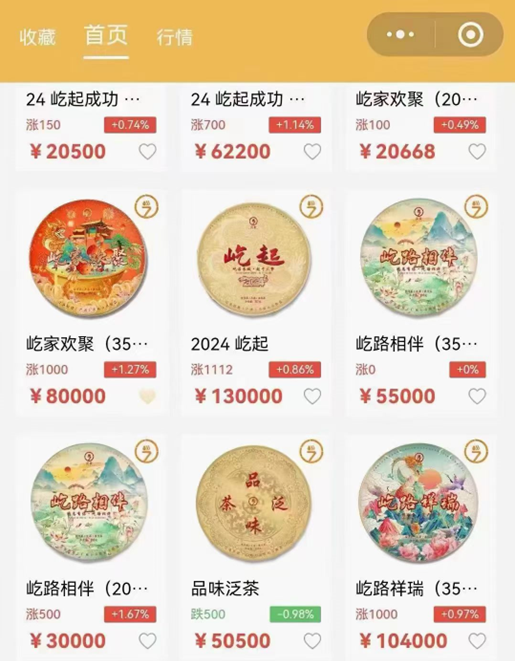
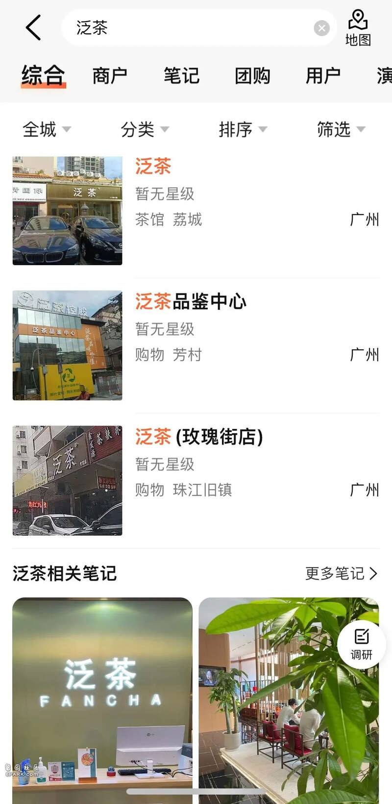
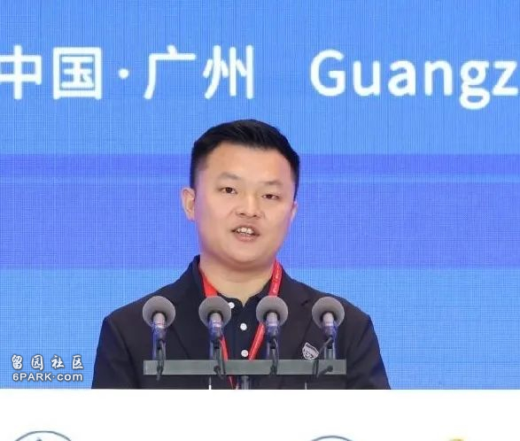

在广州芳村的泛茶研发中心，连日来人群涌动。泛茶控股无法如期完成兑付的消息传开后，这里便成了投资者和经销商们表达不满和愤怒的集结地。
尽管泛茶多次发布声明，提出解决措施。但投资者们发现，这些方案往往以他们的利益为代价，这让他们感到无法接受，愤怒和失望的情绪在人群中蔓延，气氛越发紧张。
有投资者透露，今年在泛茶投资790万，按照12%的月收益，他的本金加返现达1100万，但不仅利润没拿到，所有身家也全都快打水漂。还有经销商表示，自己有1000万本金收不回来，那是抵押房子后的所有身家。他们称，身边有更高规模资金入局，“百亿级”规模还是保守估计。
这起“金融茶”游戏的收益高得让人咋舌。凤凰网《风暴眼》从多位投资者和经销商处了解到，散户利率多在15%到30%之间，而经销商的利率更是高达100%，有经销商表示自己在2023年年初的300万本金，在一年后的2024年3月已经暴涨到3700万，“一个月躺着不干什么就能有100多万收入”。
然而这一切的暴富梦都随着爆雷戛然而止。
在这场风波中，泛茶董事长郑荣根显得颇为神秘。凤凰网《风暴眼》了解到，他曾在东莞开过茶叶店，还涉及多起债务纠纷，甚至在2021年之前还因4万元欠款而被列为失信被执行人多年。但2021前后年他却如同变魔术一般突然崛起，不仅以惊人的速度开设了近500家泛茶门店，更是组起了一个规模达百亿的资金盘。
从当初的茶商小贩到公司董事长，他开始四处布道，“匠心铸就茶品牌”、“以东方茶，会世界友”，各种宣传口号层出不穷。他还给泛茶设定了一个看起来颇为梦幻的目标——打造具有中国特色的奢侈品，做茶界爱马仕，将泛茶推向国际市场。
但如今他又回到了要还债的时光，尽管泛茶控股在8月7日的一篇推文中称，“泛茶重启工作加快进行中”。但面对急于兑付的投资者和经销商们，郑荣根的“魔法”还能否继续显灵？他能否带领泛茶控股走出这场危机？
希望似乎越来越渺茫。
经销商利率100%300万本金一年后变3700万
泛茶一度让芳村陷入了资金的狂热里。
投资者李洋自认为自己是一个谨慎的人，但在2023年，他看着身边买泛茶的朋友换广州500万以上的新房，邀请他去做客，还看他们换保时捷，实打实的变化让他在2024年加入了买泛茶的大军，2024年半年下来陆续投入了790万，其中有300多万是多年打拼的存款。
他对凤凰网《风暴眼》表示，自己的这笔金额不算高，他是泛茶某东莞渠道商下的散户，据他了解，这一家渠道商下的客户就累计有20亿资金。
吸引他的是高利润，平均一个月12%的收益，几个月下来，他的790万资金已经涨到了1100万，纯利润有310万，然而还没来记得下车，就等来了无法兑付。
经销商比散户的收益更高，50天左右的周期里利润高达100%。
经销商张龙卖房、卖车、借信用卡，在2023年年初，投入了300万，不到2个月，300万变600万，再过不到两个月，变1200万。“钱来的太快了”，张龙说，最巅峰时是在2024年3月，当时他的卡里躺着3700万现金，距离他2023年投入的300万，已经翻了10倍不止。
不用做什么，每个月就有100多万的收益进账。这还没有计算他花出去的钱。“那时候钱在我眼里不是钱了”，张龙回忆，他当时在抖音上打赏，一笔就是几十万，就像普通人花5毛钱买东西，“眼睛都不眨一下”。
投资泛茶一度被视为稳赚不赔生意。
投资人刘明透露，泛茶的价格每天都不一样，但基本都是在涨，有时候涨几百，有时候甚至涨几千，凤凰网《风暴眼》拿到的资料显示，泛茶多款产品售价均超过万元，其中一款名为“2024年屹起”的茶价格涨到13万。

在大笔的广告营销和包装下，部分茶品甚至被炒至天价，如“2021屹起”上市时报价为12000元/提，到了2022年涨至50万元，2023年则涨至60万元，今年初更是一度飙升至70万元。
这使得投资泛茶的回报率极高。刘明提到，行情好的时候，用100万投资泛茶1个月就能拿到130万，不少人靠此赚得盆满钵满。坊间甚至流传着，“炒泛茶一年赚了个小目标”的神话。
以至于有人戏称，“你们都不知道我们这些没有买泛茶的，这两年的精神压力有多大，眼睁睁地看他们炫富，他们一直叫我们买，我们不买，他们用看不起的眼神说我没格局，不懂做生意，我永远都忘记不了他们那种鄙视的眼神”。
多位投资人告诉凤凰网《风暴眼》，尤其在郑朝根老家福建安溪县西坪镇南斗村，几乎家家户户都投资泛茶，南斗村甚至还称为泛茶村。
同样来自西坪镇的柳林透露说，在当地，一度每隔大约50米就能看到一处泛茶的广告，它们密集地分布在电线杆上，居民家的外墙上，甚至因密度过高，2023年当地相关部门还下令拆除了一些广告。
但这一切繁荣景象都因泛茶发布的重组公告而戛然而止。孟祥表示，从7月份开始，泛茶新品的推出频率异常加快。过去每一个月推出一款新品，但进入7月份，每两三天就有一款新品面世。“现在看来，这可能是资金链出现问题的征兆”。
7月22日，泛茶公司发布公告称公司和部分经销商的银行账户被冻结，并决定对所有订单延期10天交付。有经销商告诉凤凰网《风暴眼》，紧接着在7月25日左右，泛茶召集了渠道商和股东举行会议。会上，郑朝根宣布公司入不敷出，将进行重组，并指导经销商如何应对客户。
郑朝根提出了三种解决方案：一是可以返还顾客投资金额的5%，而将剩余的95%转换为新品茶叶；其次，直接交付茶叶，“我们卖的本来就是茶叶，即便引发法律诉讼，我们也有充分的理由和依据来应对”；而如果投资者对前两种方案都不满意，那么可以选择等待公司重组完成后再根据实际情况处理退款问题，只要投资者愿意等待。
但对投资人来说，无论选择哪一种方案，都意味着将面临损失。尤其是对见证过财富奇迹的经销商来说，他们更是难以接受这样的现实。
今年6月，李洋路过芳村，人人都在聊泛茶，泛茶的店越开越多，癫狂的状态让他感到害怕，但7月想收手时，已经来不及了。直到爆雷前，张龙说，他都没有想过停下来，人的欲望一旦打开，“太诱人了，收不住手的”。他也想过这是不是骗局，但是每次经销商大会，看着戴着几百万手表，比他更有钱的人都在卖力做，他便打消了顾虑，也没想过抽身把钱落袋为安，直到爆雷。现在，自己的300万打了水漂，客户也认为他是同盟，向他追债。
三天发一次新产品大量茶叶在散户经销商和公司间“空转”
泛茶发展迅速，在2022年9月成立，当年就创下了119家同时开业的记录。
经销商王学是第一批加入泛茶的渠道商，他告诉凤凰网《风暴眼》，成为大渠道商的准入门槛是，交10万块押金，首批进货100万。王学称，做渠道商赚的利润实际并不高，他们拿货能打9折，比如卖给客户是1.5万，那他们拿货价即为1.35万，加上卖出的茶是限量的，所以经销商收益有限，真正吸引他们的还是买泛茶产品。
经销商张龙对凤凰网《风暴眼》透露，经销商的利率比普通散户高，在2022年年底刚加入时，利率还是20%，到了2023年年初，过完年后利率飙升到了100%，即投入4.5万，大约50天后能连本带利返还9.3万，这样的高收益比例一直持续到今年，这也是他的300万能在一年后暴涨到3700万的原因。
泛茶的经销商分四个层级，渠道商、体验馆、经销商、专营店，其余的即是散户。

此前之所以能发展迅速，和泛茶返现快金额高有关。在炒茶模式下，也推出了相应措施控制价格。
一个是限制数量。张龙介绍，每一款产品都是限量款，不会再生产。王学也提到，起初产品限量时，他这类渠道商一款产品一个月只有40提茶，体验馆一个月30提，经销商20提，专营店为10提，起初给客户的为8%左右的利率。
一个是提倡茶的“消耗率”。王学提到，公司会要求各类商家消耗茶叶，比例在“50：1”左右，即如果要进货50饼茶叶，就需要有1饼被消耗。张龙透露，经销商们每个月都会做品鉴会，这就会消耗一些茶叶，这时“一个月挣100万了，拿几万来买茶叶，大家都愿意的”。
但经销商也会有疑问，这么高的返现，利润从哪里来？王学称，公司推出了杂七杂八的策略“消耗”茶叶，郑朝根曾向大家表示“今年能争取消耗率达70%”。
然而，随着泛茶越做越大，消耗率是否提升不确定，但公司进入了更激进的吸金扩张里。
王学透露，从去年下半年开始，这些产品都不限量了，不仅不限量，还以更高的频率发新产品，“以前一个月一次，最近几个月3天就发售一个新产品”。同时，还降低了投资准入门槛，以前投资者是一提茶叶的“买”，一提茶叶有7饼，一单就需要投入几万块，但今年，一提茶可以拆开成一饼一饼的卖，散户几千块就可以投，利率也在上涨，12%、30%都是投资者提到的利率数字。
不仅如此，今年连茶叶这样的货物都开始“省”了。
王学称，以前每个月都会收发快递拿货，他们会给客户提供合同，但实际上很多客户不会要，也不会把货提走，等茶堆积多了，他们经销商会寄给本地一个中转平台，再统一寄回公司，“每次快递费就要几百块”，除了少部分茶叶被消耗，大部分茶叶实际上是在公司与经销商之间“空转”。但从今年开始，已经不用发货了，取而代之的是“流通码”，客户凭码兑付资金即可。
一个月左右就能兑付本金和收益，散户能有30%的利率，经销商能有高达100%的利率，这都让芳村陷入了泛茶的狂热状态。
神秘的郑朝根：
还不起4万块的失信被执行人
如何成百亿级资金操盘手
这笔上百亿规模的资金盘，幕后操盘手为郑朝根，1989年生人，福建省安溪县西坪镇人。
提到之前对郑朝根的印象，王学和张龙都用到了朴实、大爱这两个词。
张龙说，郑朝根平时就骑电动车，甚至在芳村也是租房住，房子还只有50平米，去过他家的经销商都惊讶不已。不仅朴素，工作热情也高，每次经销商的活动他都是亲力亲为，这么大的老板，这么有亲和力，和他们像朋友一样吃饭喝酒，还说要“把茶叶推向全球，站到世界舞台”，这都给了王学和张龙想要好好做泛茶的信心。

郑朝根和他的兄弟郑海华，会经常把“大爱”“无私奉献”挂嘴边，张龙提到，公司这几年还捐了很多款，一捐就是几十万、上百万，捐给贫困小学，给家乡修路等。
这也是为什么即便在7月22日，公告通知资金出现了问题后，张龙、王学也没有怀疑过公司情况的原因。
在凤凰网《风暴眼》接触的受访者中，张龙有300万本金没有拿回，王学有1000万本金没有拿回，他有认识的经销商有2700万本金没有拿回。而投资者李洋，有790万本金没有拿回，金额都相当庞大。他们称，泛茶百亿级规模已经是保守估计。
然而让人惊讶的是，操盘百亿级资金盘的郑朝根，在2021年前后竟是连4万块都还不起的失信执行人。
根据裁判文书网，郑朝根在2016年向表兄弟李某、彭某立下欠据，总计欠下11.5万，在2020年李某、彭某将郑朝根告上法庭，但郑朝根并无可供执行的财产，还要其他案在身。这是因为在两年前，2018年，郑朝根也因为4万块的货款，被白某告上法庭，郑朝根银行卡里还只有8881元，同样没有可供执行的财产。
根据公开信息，泛茶的董事为王艺谦、总经理为郑海华、副总经理为郑华东。而在裁判文书网里，均有和他们同名，且同样来自郑朝根的家乡安溪县的人士，曾有欠款纠纷，成失信被执行人。名为王艺谦的人士有多起欠款纠纷，涉及金额为6万、10万。郑海华在2020年因欠信用卡本金1.9万，被纳入失信被执行人名单，郑华东在2019年因拖欠汽车的分期付款，被起诉。
一位知情人对凤凰网《风暴眼》透露，2017年郑朝根在做茶生意，来拿了价值近4万块的货，对方想着是老乡，便让其赊账，但没有想到郑朝根没有还上，成为失信被执行人。在2021年成立泛茶之前，郑朝根突然电话联系债主，称能把4万块还了，但要求债主去法院解除其失信被执行人身份，上述人士表示，这是因为如果在法院的失信被执行人名单中，会影响郑朝根申请注册公司。
就是这样连4万块都还不起的神秘人士，突然摇身一变，在2022年突然开起了一个大品牌，泛茶，处处展现出资金上的雄厚：100%的返利，在美国时代广场上打广告，创下119家泛茶店同时开业的记录。
8月4日，郑朝根还在视频号上发布了一个视频，称要“直面困难，共渡难关，一起加油，再造一个伟大的泛茶”，现在，他还在经销商群中发布消息，希望开启重启计划。
不论是王学还是李洋，都已经不敢相信了。他们不明白，4万块钱都还不起的郑朝根，为什么能够有这么大的能量？他真的能带大家走出泥潭吗？
文中受访者均为化名